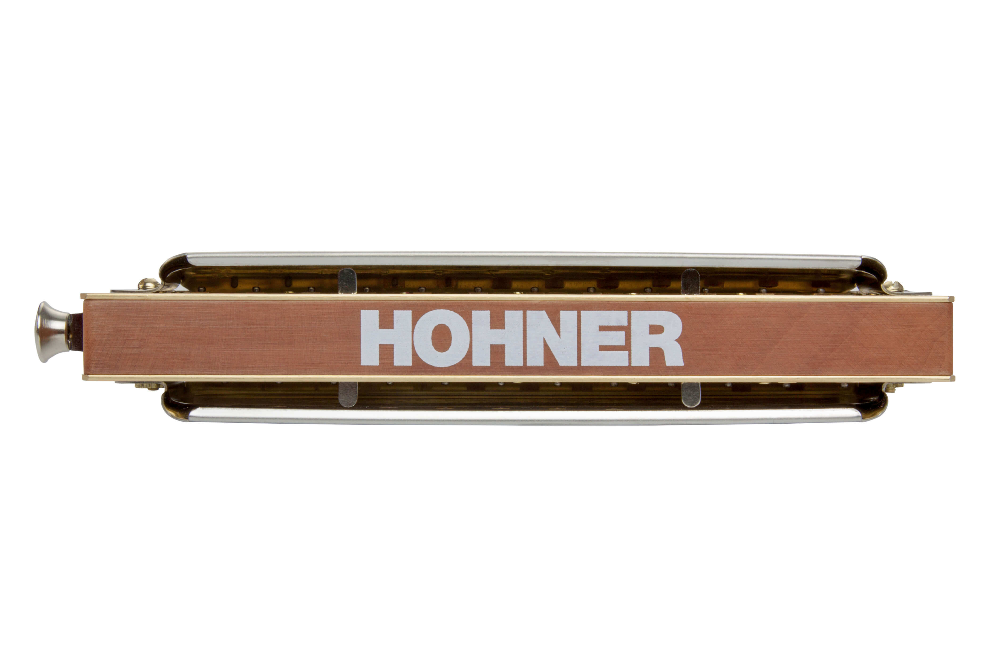

Receive More
THE LEGEND LIVES ON
Whether it’s a melody from a long forgotten movie or a tune from childhood that you keep hearing in your head, we all have certain songs that are imbedded in our memory and take us back in time. With the Super Chromonica, we can recapture those moments. Almost unchanged since its inception, it’s still the original chromatic harmonica and the instrument of choice for generations of players who have left their mark in folk, pop and jazz.


FEATURES

Traditional cover plates
Tradition cover design and embossing
Wood comb
Double lacquered pearwood comb for rich sound and reduced swelling behavior
Comb design
The optimized comb design ensures superior response in the upper register